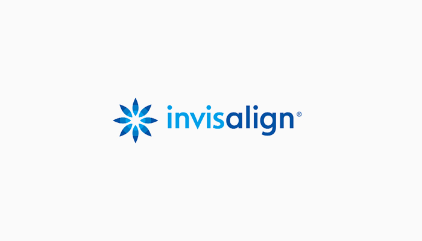
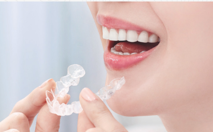

インビザライン（マウスピース型矯正装置）Invisalign

矯正治療はおとなの方も問題なく受けられる治療ですが、「目立つ装置に抵抗がある」という方が少なくありません。そのような方におすすめするのが、インビザラインです。
インビザラインとは、歯型を採って製作した透明なマウスピースタイプの装置を使って、歯を少しずつ正しい位置に動かしていく矯正治療の方法です。装置が透明なため目立たず、「仕事上目立つ金属製の装置を付けられない」という方にも選ばれています。
また固定式の装置にあった、「ワイヤーが唇に刺さってしまった」「スポーツをするときにワイヤーの装置でケガをしないかこわい」「装置で締めつけられて痛い」といったデメリットもありません。
佐賀県鳥栖市の歯医者「みらい歯科・こども矯正歯科」は、インビザラインの専門医として認定を受けています。インビザラインに興味のある方は、お気軽に当院までご相談ください。
マウスピース矯正（インビザライン）のメカニズム
インビザラインは、オーダーメイドで製作した個人専用の透明なマウスピースを、歯の動きに合わせて一定期間ごとに取り替えながら、歯を正しい位置に動かしていく治療法です。透明で目立たない上に、取り外せるため食事や歯磨きも通常通り行え、さらに装着時の痛みが少ないといったメリットがあります。
インビザラインを用いた治療は、歯を支えているあごの骨が健康であれば、年齢を問わずどなたでも受けられる治療です。歯並び・噛み合わせが正しくなれば歯磨きがしやすくなり、お口を清潔に保てることでむし歯・歯周病を予防できます。ずっと自分の歯で食事や会話を楽しむためにも、インビザラインを検討してみませんか？
こんな方におすすめ
- 人に会う、人前に出る機会が多い方
モデルや講師、営業職、接客業など、人によく会うお仕事の方は、とくに目立つ装置には抵抗があるのではないでしょうか。インビザラインの装置は透明で目立たないため、そのような方でも気にせず治療を受けていただけます。
- 目立つ装置に抵抗があり、矯正治療を避けてきた方
「歯並びの乱れが気になっていたけど、目立つ装置を付けるのはちょっと……」と、これまで矯正治療を避けてきたという方にも、インビザラインはおすすめです。装置が目立たないため、矯正治療をしていることにも気づかれずに済みます。
- いつもと変わらず食事を楽しみたい方
固定式の装置の場合、硬い食べ物や粘着性の高い食べ物はトラブルを招く可能性があるため、控える必要があります。しかし、インビザラインなら食事中に取り外せるため、治療期間中もいつもと同じように食事を楽しめます。
- 痛みが苦手な方
インビザラインのマウスピースは、歯に弱い力を少しずつかけてゆっくりと動かしていく構造になっています。そのため固定式の装置に比べて痛みが少なく、ワイヤーなどでお口の中を傷つけるようなこともありません。
- 金属アレルギーの方

インビザラインのマウスピースの素材は、プラスチックです。金属を使用していないので、アレルギーのために従来の金属製の装置が使えなかった方も、安心してお使いいただけます。
～乱れた歯並びが及ぼす悪影響について～
歯並び・噛み合わせの乱れは、以下のようなさまざまな悪影響を及ぼします。
- 歯並び・噛み合わせが乱れていると汚れが溜まりやすく歯磨きがしにくいため、むし歯や歯周病になりやすくなります。悪化すれば歯を失ってしまいます。
- 歯を失って放置すると、できたスペースに隣の歯が倒れ込んできたり、噛み合う歯が伸びてきたりして、噛み合わせを乱します。奥歯に過剰な負担がかかり、歯肉に炎症を起こして歯周病を招き、さらに歯を失ってしまいます。
- 多くの歯を失って入れ歯やインプラント治療を受ければ、治療費がかさみます。
- 見た目がコンプレックスになって、話したり笑ったりするときにも口元で手を隠すなど、人とのコミュニケーションに消極的になってしまう方も少なくありません。
このような悪影響を防ぐためにも、おとなの矯正治療は有効です。年齢を重ねても、心も体も元気でいられるよう矯正治療を検討しませんか？